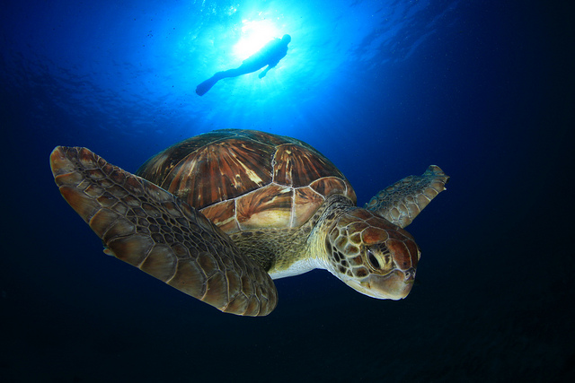

MAPA
¿TE GUSTARÍA SABER DONDE SE ENCUENTRAN LAS ESPECIES CON LAS QUE HEMOS TRABAJADO?

TORTUGA BOBA
La tortuga boba sufre principalmente por la pérdida de hábitat, la contaminación por plásticos, la pesca incidental y el cambio climático.
La tortuga boba sufre principalmente por la pérdida de hábitat, la contaminación por plásticos, la pesca incidental y el cambio climático.
Para protegerla, hemos estado mejorando el estado de las playas de anidación, hemos regulado el uso de plásticos, hemos minimizado las prácticas pesqueras y tenemos monitoreados los nidos.
